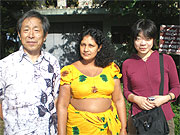
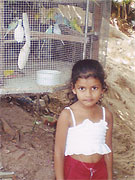
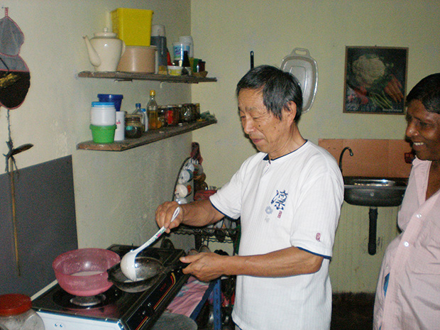
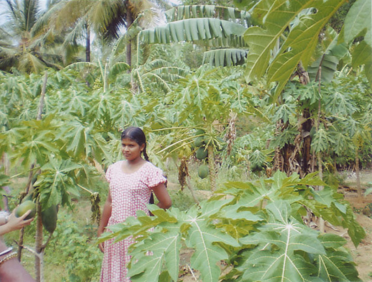
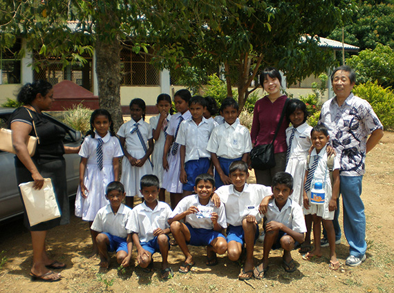
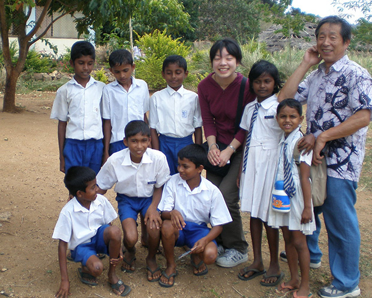

「ある日、いつものようにインターネットに接続し、『Beインターナショナル』と言うホームページに目が止まりました。
試みに資料を取り寄せ、読んでいくうちに興味が湧き段々本気になってきました。
所が考えて見ると私は、６２歳なのです。
冒険心はとうの昔に何処かへ飛んでいった年代になっていたのです。
色々考えた末に出した結論は『行ってみよう』でした。
受理された、担当の逢坂さんは多分、心配半分で受理され、ホームステイ先の選定に相当苦労されたと思います。
そして何となく着いたコロンボ空港で現地受入団体の方に出迎えてもらい、目指すホームステイ先へと向かいました。

到着したホームステイ先のご主人は、偶然というか担当の逢坂さんの苦心の選定の結果と言うか私と同年で安心しました。
私どもの年代は、終戦（本当は敗戦）後の世代であり、物の不自由な生活で育ってきており、今のさまな、物や人の使い捨ての世代とは違う価値観をも知っております。
ですから、不自由なのは当然との考えも有りますので、現地での生活はまるで少年時代のあの懐かしい暖かい時代に帰ったような気がしました。
日本での生活スタイルになれている若者にとってはいろいろと戸惑うこともあるかもしれませんが、私自身にとっては、有益な体験で、ファミリーとの生活は最高でした！！

英語を教えて下さる先生はホームステイ先から歩いて3分位の距離で、時間が有ると近所を案内して色々説明をして下さるのですが、理解半分、推測半分で十分その意味が解ったと自分なりに勝手に解釈しておりました。
本当にすばらしい先生でした。
勿論、英語研修と言う目的で来たのですが、手品でもあるまいし短時間で習得できる訳でも無いと思っておりますので「ボチボチ」の精神で行こうと思っております。

仕事の間をぬっていった僅か一週間の滞在でしたが、今度は少なくとも半月もしくは一ヶ月でも行けたら良いなと本当に感じております。
このスリランカの国も我が国と同さま、又は、それ以上の問題を抱え、悩んでおりますが、 この国のホスピタリティーの精神が解決してくれるのではないかと思います。
行くときは『心配顔』帰るときは、あの低開発村の小学校の生徒達と同じ輝く目と笑顔で帰ってこれたことは、まるで宝くじに当たったさまな気分です。
この拙文の記事が、同世代の人の参考になれば、これ以上の喜びは有りません。
有難う御座いました。」

